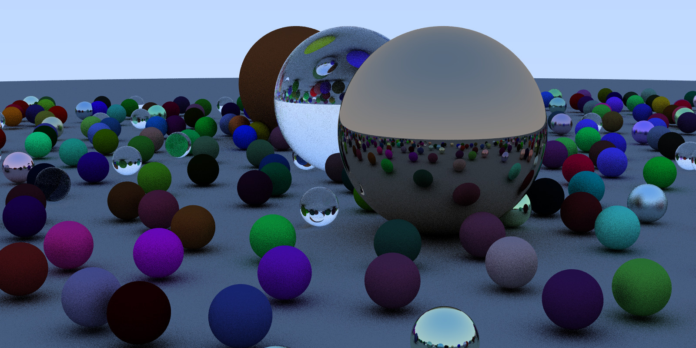

OWL-Node Graph: Quick API Overview
This page gives a very brief overview over how to write programs using the owl node graph (owl-ng) API. Note this page is not intended as a full API spec, but only to give a rough idea of how the API works.
For the full code of this sample, have a look at the full code for this sample on GitHub
As a teaser of what the sample produces: 
{kind=link}
Device-Side Types and Programs
As with any OptiX program, the RTOW-ng sample consists of both host- and device-side parts. On the device-side, we create user geometry types by defining something as simple as
struct MetalSpheresGeom {
MetalSphere *prims;
};where each MetalSphere looks like this:
struct Metal {
vec3f albedo;
float fuzz;
};
struct MetalSphere {
Sphere sphere;
Metal material;
};(obviously, same for DielectricSphere and LambertianSphere, too). Note that unlike OptiX 6 we do not separately handle "Appearance" and "Geometry", but require a single struct that combines them - OptiX 6 "fused" those two parts using a compiler, which we (intentionally) do not use in OWL).
Closest Hit Program(s)
For those types, we then also need to define the device-side closesthit, miss, and raygen programs; e.g.
template<typename SpheresGeomType>
inline __device__ void intersectProg()
{
const int primID = optixGetPrimitiveIndex();
const auto &self
= owl::getProgramData<SpheresGeomType>().prims[primID];
const vec3f org = optixGetWorldRayOrigin();
const vec3f dir = optixGetWorldRayDirection();
float hit_t = optixGetRayTmax();
const float tmin = optixGetRayTmin();
...
/* ray-sphere intersection code here */
}
OPTIX_INTERSECT_PROGRAM(MetalSpheres)()
{ intersectProg<MetalSpheresGeom>(); }
Note that I used a template here to re-use the same intersection program across all three materials; this was convenient in this case, but is not a requirement of OWL.
User Geometry: Bounds Program(s)
Similarly, we define our bounds programs:
template<typename SphereGeomType>
inline __device__ void boundsProg(const void *geomData,
box3f &primBounds,
const int primID)
{
const SphereGeomType &self = *(const SphereGeomType*)geomData;
const Sphere sphere = self.prims[primID].sphere;
primBounds = box3f()
.extend(sphere.center - sphere.radius)
.extend(sphere.center + sphere.radius);
}
OPTIX_BOUNDS_PROGRAM(MetalSpheres)(const void *geomData,
box3f &primBounds,
const int primID)
{ boundsProg<MetalSpheresGeom>(geomData,primBounds,primID); }Obviously we need those bounds progs only for user geometry; triangle geometry uses buffers for vertex and index buffers.
Host Side
Once the device-side types and programs are defined, on the host code we start off by creating a new owl context
OWLContext context = owlContextCreate();Geometry Type
We then create a geometry type for our metal spheres
OWLVarDecl metalSpheresGeomVars[] = {
{ "prims", OWL_BUFPTR, OWL_OFFSETOF(MetalSpheresGeom,prims)},
{ /* sentinal to mark end of list */ }
};
OWLGeomType metalSpheresGeomType
= owlGeomTypeCreate(context,
OWL_GEOMETRY_USER,
sizeof(MetalSpheresGeom),
metalSpheresGeomVars,-1);
owlGeomTypeSetClosestHit(metalSpheresGeomType,0,
module,"MetalSpheres");
owlGeomTypeSetIntersectProg(metalSpheresGeomType,0,
module,"MetalSpheres");
owlGeomTypeSetBoundsProg(metalSpheresGeomType,
module,"MetalSpheres");... which defines the programs to run on that type, as well as the sizeof the "variables" struct that this type uses (the MetalSpheresGeom type defined above). Obviously, we again do the same for Dielectric and Lambertian, too.
Geometries
Using these three types, we can now create actual geometries that use these types. Note that in this example, each type actually contains several spheres of the given type, which we pass through a buffer:
OWLBuffer metalSpheresBuffer
= owlDeviceBufferCreate(context,OWL_USER_TYPE(metalSpheres[0]),
metalSpheres.size(),metalSpheres.data());
OWLGeom metalSpheresGeom
= owlGeomCreate(context,metalSpheresGeomType);
owlGeomSetPrimCount(metalSpheresGeom,metalSpheres.size());
owlGeomSetBuffer(metalSpheresGeom,"prims",metalSpheresBuffer);(again, same for Dielectric and Lambertian).
We could of course have created a different geom for each sphere, too, but at significantly higher cost (for reasons we won't go into here).
Acceleration Structure
Once we have our three geometries we can create a accel structure/group over them via
OWLGroup world
= owlUserGeomGroupCreate(context,3,userGeoms);
owlGroupBuildAccel(world);... which will take care of all the required steps for - allocating memory for the bounds program and computing the bounds of all primitives in all geometries in this group - setting up the build inputs for the acceleration structure - allocating memory for the accel structure, and executing the three build stages, including compaction of the final BVH.
RayGen...
then create miss and raygen program
OWLVarDecl rayGenVars[] = {
{ "fbPtr", OWL_BUFPTR, OWL_OFFSETOF(RayGenData,fbPtr)},
{ "fbSize", OWL_INT2, OWL_OFFSETOF(RayGenData,fbSize)},
{ "world", OWL_GROUP, OWL_OFFSETOF(RayGenData,world)},
{ "camera.org", OWL_FLOAT3, OWL_OFFSETOF(RayGenData,camera.origin)},
...
};
OWLRayGen rayGen
= owlRayGenCreate(context,module,"rayGen",
sizeof(RayGenData),
rayGenVars,-1);...set its parameters
owlRayGenSetBuffer(rayGen,"fbPtr", frameBuffer);
owlRayGenSet2i (rayGen,"fbSize", (const owl2i&)fbSize);
owlRayGenSetGroup (rayGen,"world", world);
owlRayGenSet3f (rayGen,"camera.org", (const owl3f&)origin);
...... and finally: Launch
Once all the scene is defined, all we have to do is tell owl to build the programs, pipeline, and shader binding table (SBT)
owlBuildPrograms(context);
owlBuildPipeline(context);
owlBuildSBT(context);... and launch the ray gen program
owlRayGenLaunch2D(rayGen,fbSize.x,fbSize.y);Then after the launch, read the frame buffer and write it to disk:
const uint32_t *fb
= (const uint32_t*)owlBufferGetPointer(frameBuffer,0);
stbi_write_png(outFileName,fbSize.x,fbSize.y,4,
fb,fbSize.x*sizeof(uint32_t));Final Remarks
For the full code of this sample, have a look at the full code for this sample on GitHub